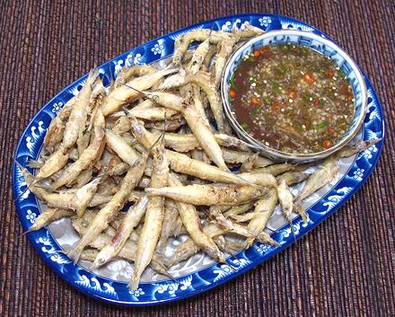

Native from around Taiwan north to Vladavastok, including both coasts of Japan, the coast of Korea and all around the Sea of Japan. This is considered a delicious eating fish, The bottom jaw is very long, and the top jaw very short, thus, "halfbeak". This fish can grow to 15-3/4 inches, but the photo specimens were about 5-1/2 inches long including the beak, weighing 5 to the ounce. They were labeled "wild caught" and product of Vietnam, but must have been caught at least as far north as Taiwan. This fish is very common and IUCN Red list NE (Not Evaluated).
More on Varieties of Fish
(very large page).
 These fish are considered tasty and quite popular in Japan, but used in a much larger size than the ones I have found here in Los Angeles. These tiny ones are to be eaten "heads, guts and feathers" (and beak too). Those in the photo to the left were cooked quite successfully following our recipe for Vietnamese Fried Smelts with Dipping Sauce.
The best thing about these fish is that, if you fry them beak-on, which I always do (the beak gets crisp and edible), you can tell your guests they are Baby Swordfish. Guests will be delighted, impressed, or outraged, depending on their ecological sensitivities.
Buying: This fish is not common here in Southern California, but does ocassionally appear in the freezer cases of one or another of the Asian markets. The photo specimens were purchased from a large Asian market in Los Angeles (168 market, Alhambra), frozen, for 2019 US $4.56 / pound, in a 14 ounce tray, product of Vietnam.
Scales: If there are any, they're too small to see.
Cleaning: That just isn't done - there's not much in these fish anyway.
Fillet: You've got to be kidding. You'd need surgical skills and a microscope.
Yield: 100%
Stock: I suppose you could just pour them into the stock pot and simmer for 30 minutes or so. I haven't tried it, but I expect it would work fine.
sf_hbjapz 190731 - www.clovegarden.com